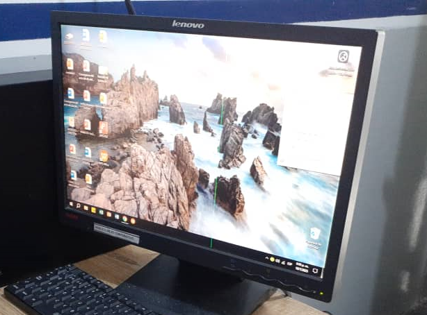

Monitor
Limpieza y verificación de conexiones
Ver guía paso a paso
1. Desconexión y seguridad
Apaga el monitor y desconéctalo de la corriente. Espera al menos 30 segundos antes de manipularlo.
2. Limpieza de pantalla
- Usa un paño de microfibra.
- Aplica limpiador especial para pantallas o alcohol isopropílico al 70%.
- No rocíes el líquido directamente sobre la pantalla.
3. Limpieza de estructura
Pasa un paño ligeramente húmedo por la base, marco y parte trasera.
4. Revisión de conexiones
- Verifica cables VGA, HDMI o DisplayPort.
- Asegura que no estén doblados o rotos.
- Comprueba que la fuente de poder funcione correctamente.

Teclado
Limpieza profunda y verificación de funcionamiento
Ver guía paso a paso
1. Preparación
Desconecta el teclado y voltéalo suavemente para retirar el polvo suelto.
2. Limpieza entre teclas
- Usa aire comprimido para expulsar suciedad.
- Puedes usar un pincel pequeño o brocha suave.
3. Limpieza profunda
Con un hisopo y alcohol isopropílico, limpia cada tecla individualmente.
4. Verificación
Conéctalo y prueba todas las teclas con un probador online.

Mouse
Limpieza externa, sensor y revisión de botones
Ver guía paso a paso
1. Limpieza externa
Pasa una toalla ligeramente humedecida por la superficie del mouse.
2. Limpieza del sensor
Con un hisopo seco o aire comprimido, limpia el sensor inferior para evitar fallas de movimiento.
3. Limpieza de la rueda
Mueve la rueda varias veces mientras soplas o aplicas aire comprimido.
4. Revisión de botones
- Haz clic repetidamente para verificar que ninguno se quede pegado.
- En mouse USB, prueba en otra PC si no responde.